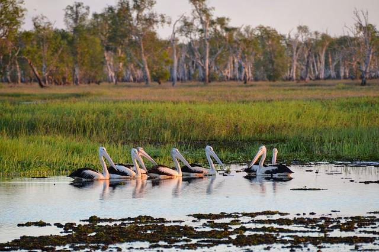

¿Que son y por qué se considera un ecosistema terrestre?
Los humedales son un ecosistema terrestre que a veces se puede confundir con uno marino, pero este se le considera un ecosistema terrestre ya que el agua que llega a tener es superficial y no profunda, en un humedal se puede encontrar diversas plantas que dependen del agua para crecer o plantas las cuales crezcan en tierra, como en un humedal es un hibrido entre un ecosistema hibrido entre uno marino y terrestre, es mas considerado terrestre ya que como se menciono antes tiene poca agua a comparación de uno marino y tiene en varias partes pequeñas formaciones de tierra las cuales sobre pasan la altura del agua.
Tipos de Humedales: Los manglares que se encuentran por lo general en zonas costeras y contienen como planta principal las especies de manglares. Los pantanos que ha diferencia de los humedales habituales este tiene menor nutrición. Los lacustres que son los lagos, lagunas de agua dulce,entre otros tipos de humedales El Humedales marino estos se generan por playas rocosas, de grava y arena, estos manglares su agua es salada. Los humedales fluviales son aquellos que están formados por ríos, cascadas y arroyos. Los palustres Tropicales que incluyen manantiales, oasis, bosques pantanosos, serlvas inundables y ciénagas.
¿Como han sido afectados los Humedales por los humanos?
Ahora que sabemos cuales son los tipos de manglares y que son es importante saber como se han visto afectados con el paso del tiempo estos humedales antes mencionados. La agricultura El humedal es un ecosistema que facilita la obtención de agua dulce para los cultivos pues es utilizada frecuentemente para la agricultura, esto por consecuencia a llevado a muchos humedales a la desertificación.
Pesca: Los humedales tienen una alta demanda para la pesca ya que es mucho mas fácil conseguir el producto buscado, esto ha traído fuertes consecuencias para la fauna del lugar. Extracción del agua dulce: Entre principalmente afecta a los manantiales, lagunas, ríos fluviales y lagos, esta extracción de agua dulce para el consumo diario de una cuidad ha afectado al grado de desertificar muchos humedales, afectando a las plantas del ecosistema y la fauna que depende de estos, que viven en ellos o a sus alrededores.
¿Cuántos humedales hay y cuantos se han perdido?
Los humedales han sido desgastados he alterados por los humanos durante muchos años en total desde el año 1977 todos los humedales que existían desde ese entonces se han perdido el 35% de estos durante los últimos años, en todo el mundo. Esto se debe por la falta de conciencia social sobre la importancia de estos y sobre la falta de pensar soluciones antes que la mayoría de estos desaparezcan.
¿Por qué es importante llegar a conservarlos?
Estos ecosistemas tienen mucha variedad de plantas y animales, estos son los que conforman la esencia del ecosistema, pues son la cadena que permite el ciclo de vida del ecosistema entonces prácticamente si desaparecen estos o unos de los elementos básicos del ecosistema el agua o la tierra fértil, desaparecería el ecosistema este con las miles de criaturas que viven, en este tanto plantas y animales.